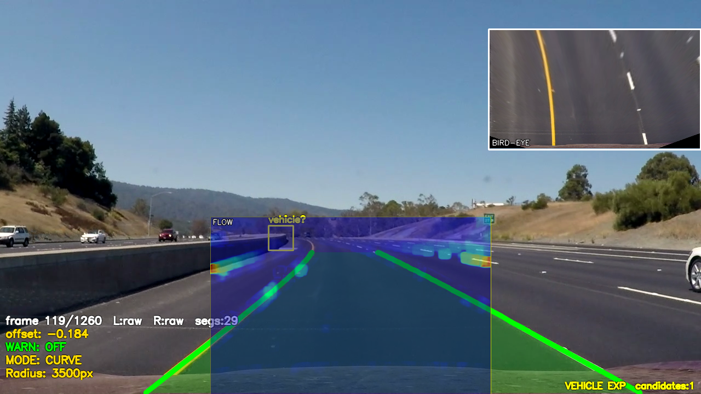

11
결과 · 한계 · 결론
Results & Conclusion
C2 직선 검출률
100%
좌/우 차선 모두
2개 클립 달성
LDW 검증
C4
합성 이동 테스트
이탈 경고 정상 동작
처리 속도
115fps
직선 파이프라인
곡선 포함 70fps
한계 — 차량 검출
고전 기법 차량 후보:
7% FP
프레임 — 대부분 도로 질감 오검출
이 한계가
딥러닝이 필요한 이유
고전 CV만으로 ADAS 핵심 기능을
안정적으로 완성

차량 검출: 7% 프레임 FP — "딥러닝이 필요한 이유"
감사합니다
— RoadVision